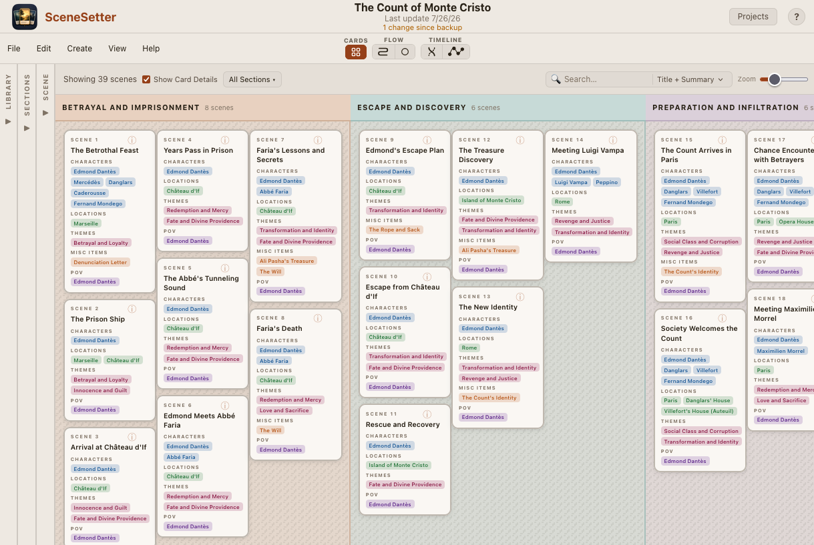
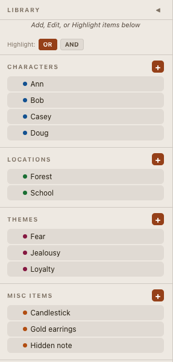
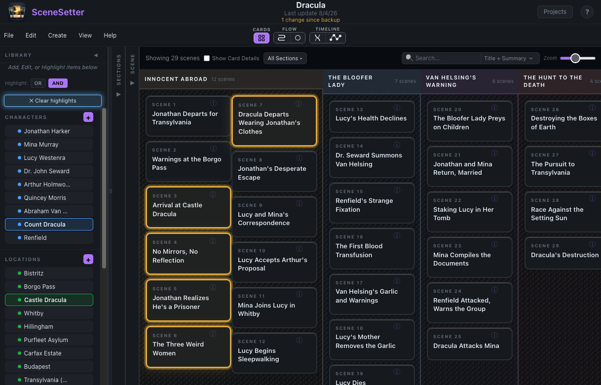
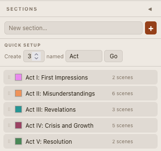
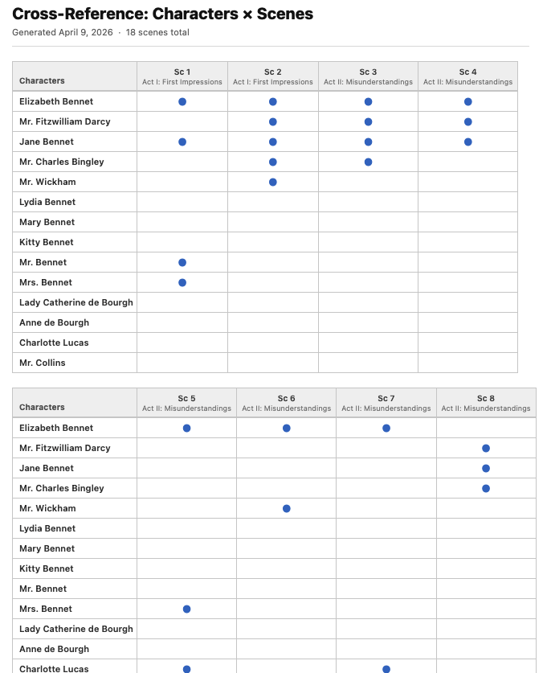
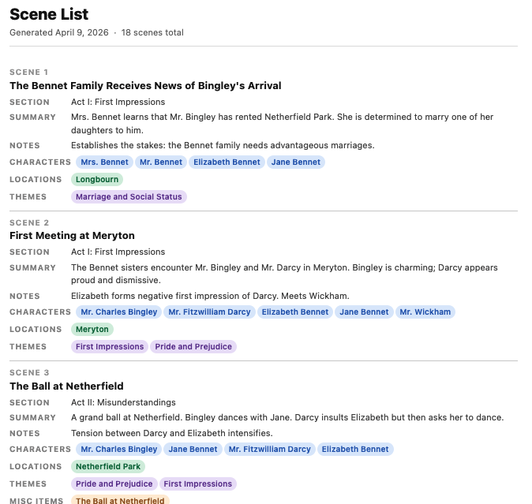
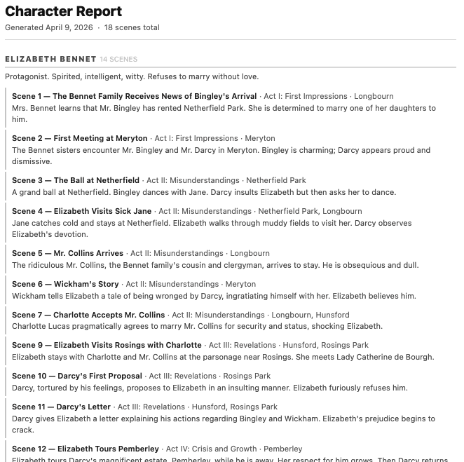

SceneSetter is a card-based visual story organizer built for writers of all kinds — novelists, screenwriters, playwrights, game designers, and anyone who needs to structure a narrative. It helps you organize your characters, locations, themes, and scenes so you can focus on telling your best story.
Everything runs in your browser. No account needed, no data sent to any server. Your stories stay yours.
Your scenes are displayed as cards on a visual board. Drag and drop to reorder, organize into sections (acts, chapters, parts), and see your entire story structure at a glance.

Click to enlargeBuild a library of characters, locations, themes, and miscellaneous items. Attach them to scenes to track who appears where, which locations are used, and how themes flow through your story.

Search for characters, locations, themes, and items across your entire story. Instantly see which scenes contain your chosen elements, identify where characters appear and disappear, spot narrative gaps, detect over-crowded scenes, and analyze the flow and pacing of character involvement. Perfect for tracking ensemble casts, theme consistency, and location usage across your narrative.

Click to enlargeGroup scenes into sections — acts, chapters, parts, or whatever structure fits your story. Use color-coded headers to visually separate your narrative beats.

Generate a variety of printable reports to review your story from different angles. See which characters appear in which scenes, track location usage, analyze themes across acts, and more. Each report gives you a new perspective on your narrative structure.



Since all your content stays on your device, there is no cloud service for SceneSetter. To share work among separate devices, it is necessary to download the file (which is in JSON format) and open it in the other device. BE SURE TO OPEN A PROJECT WITH THE MOST RECENT SHARED FILE TO PREVENT OVERWRITING NEW CONTENT WITH OLD. A suggested practice is to date each downloaded JSON file to make sure you are working with the most recent data.